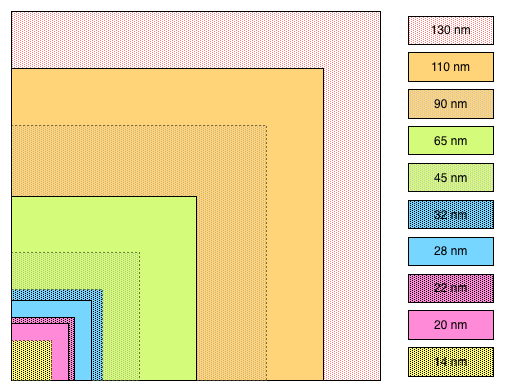

Dave Hudsonhashingit.com |
ASIC mining is now the norm for Bitcoin, and 28 nm ASICs are now becoming the mainstream replacing the 65 nm, or even 110 nm, designs of a year ago. Bitcoin ASICs have leapfrogged several integrated circuit (IC) technologies in a way that’s rarely been seen before and at an almost unprecedented rate of progress.
How have things been able to move so fast, how much further can this go, and what might we expect from new designs?
There are two characteristics of Bitcoin’s design that have enabled the current style of ASIC mining:
From a hardware designer’s perspective the scalability of Bitcoin was a brilliant piece of engineering. Its design allows many parallel engines to work on the same problem without significant serialization (where things get bottlenecked through one part of the system) and the system design anticipated the need to automatically adapt as processing capacity increased or decreased, so adding a huge increase in processing wouldn’t break anything. This sort of design is sometimes referred to as “embarrassingly parallel”, and is one of the reasons why GPU mining worked so well prior to the development of ASICs as graphics processing is very similar.
The SHA256 hash has been the subject of some criticism from other cryptocurrency advocates (although the introduction of Scrypt ASICs is showing that their arguments in favour of more complex hashes are somewhat weaker than they originally believed), but from an ASIC designer’s perspective SHA256 was ideal. SHA256 has been supported in hardware for some time and so there were designs readily available to be used in mining chips.
As two of the most tricky aspects of building an ASIC were already solved they were able to be developed far faster and with far less expense than would be true for most chips. With the first generation ASICs being so profitable for their designers then the rapid push towards newer and faster chips was almost inevitable.
Silicon designers think in terms of the “feature size” or “geometry” of a design and this is measured in nanometers (nm). This number describes the smallest sized part used in constructing the transistors or wires within the integrated circuit (IC). The smaller the number, the more such elements can be fitted into the same space. It’s important to realize that because ICs are two dimensional then making the feature size half of what it was means that we can actually get four times as many things in the same space.
Over the course of time silicon designers “shrink” the feature size, typically at the rate of about 2x every four years. 130 nm designs were state of the art in 2002, 65 nm in 2006, 32 nm in 2010, etc. At the time of writing (2014), x86 processors used in PCs, laptops and servers are using 22 nm and are scheduled to jump to 14 nm, while a state of the art mobile phone or tablet is probably using 28 nm.

Looking at this as a picture we can see just how much difference there is between 110 nm, 65 nm and 28 nm. We’re able to get more than 5x the number of transistors in a 28 nm device than a 65 nm one, and about 16x the number of a 110 nm one. What this means for mining ASICs is that we can get 16x as many hashing engines in the same amount of silicon. The solid block colours indicate geometries in which Bitcoin ASICs have either shipped or have been announced.
The process geometry matters for many reasons:
This isn’t the full story as there are lots of subtleties that we won’t go into here, such as there being “fast” and “slow” processes where typically faster processes consume a lot more power for the same work and slower ones consume less. When looking at 28 nm mining ASICs, though, it’s worth noting that they’re not all created equal and there will inevitably be quite large differences between the different designs we see.
Bitcoin ASICs have jumped forwards to the point where they’re catching up with the limits of what can be done. Realistically they should be able to shrink to 16 nm by the end of the year or the beginning of 2015, and at 16 nm there’s potentially a 3x improvement over an equivalent 28 nm device. Once things reach the limits of the fabs that produce the ASICs, though, then process-related gains will slow down dramatically.
This doesn’t mean that there’s no more big jumps possible. It’s likely that designers this year will have to start (if they haven’t already) at other ways to try to keep propelling the ASIC mining train. Here are a few thoughts on where things may go next:
These sorts of changes are going to require more work though because they won’t just be based on known-working hardware concepts.
It will be interesting to see just how this progresses; while the pace of progress will slow from where it is now, and the steep exponential growth in the hashing rate is likely to slow, there’s every reason to believe that progressively faster hashing rates will continue to be a reality for quite some time to come.